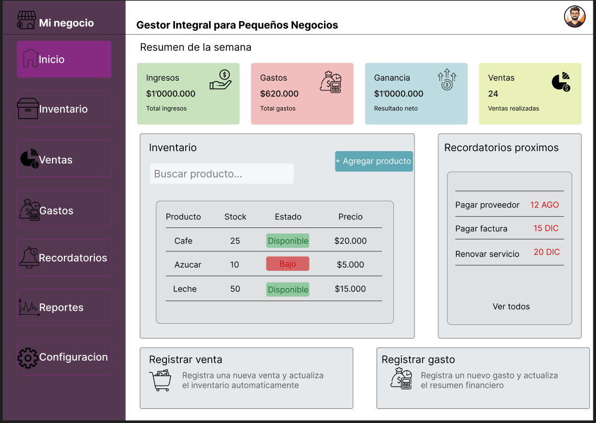

Problema
Muchos pequeños negocios administran inventario, ventas, gastos y recordatorios utilizando diferentes herramientas, lo que genera desorden y dificulta el control financiero.
Muchos pequeños negocios administran inventario, ventas, gastos y recordatorios utilizando diferentes herramientas, lo que genera desorden y dificulta el control financiero.
Una plataforma web que centraliza toda la información del negocio en un solo lugar para facilitar su administración diaria.
Registrar productos, cantidades disponibles y alertas de bajo stock.
Registrar movimientos financieros y visualizar un resumen semanal.
Administrar pagos pendientes, compras de inventario y tareas importantes.

La versión inicial del proyecto será gratuita para pequeños negocios.
Sí, el sistema está diseñado para permitir la gestión de múltiples negocios desde una misma cuenta.
No. El objetivo es que funcione completamente desde el navegador web.